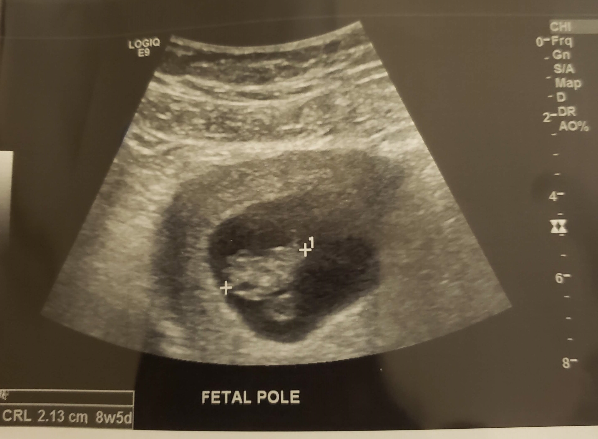

Baby's first pictures!

Information from the doctor about the baby:
- The baby measures to be about 8 weeks into gestation!
- The baby is about the size of raspberry or bluberry at this point, some body parts have formed now too!
- Now because the baby is so small we can't measure a heart beat like normal, but we can measure using a special form of ulrasonic imaging. (If you want to know more click here) But this allows us to measure as early as 8 weeks!
- The doctor also let us know that the baby is very healthy and is not worried about any side affects, but Mama needs to pay attention to eating and drinking plenty when she can!